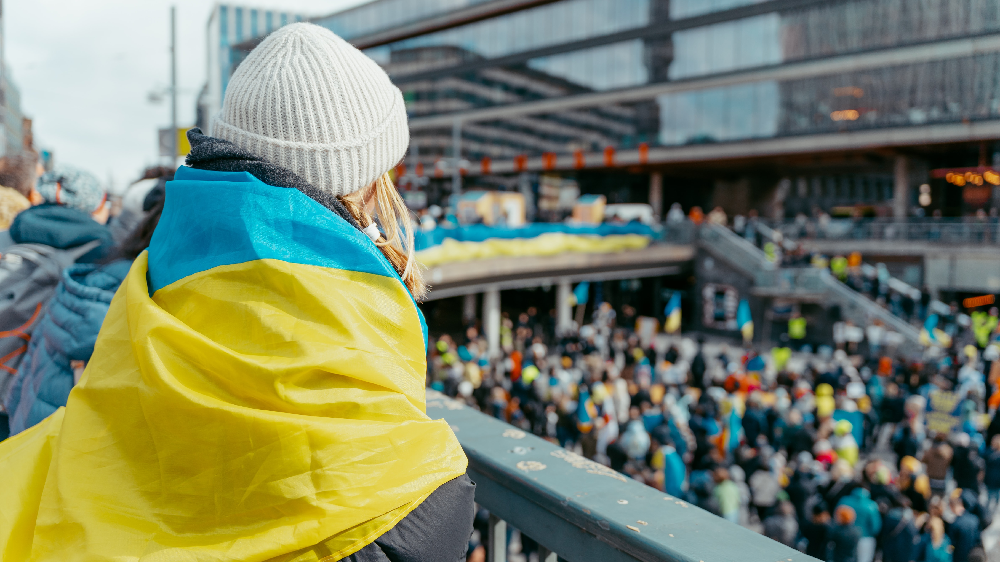

Mie Marielle Øverås Vitting Publisert 08.09.22
Hva mener du er den største forskjellen på det norske og ukrainske skolesystemet?
- Helt klart at man kan kle seg i hva man vil, fordi i Ukraina hadde vi en slags uniform, vi måtte kle oss enten i svart, hvitt eller grått. Det var vanskelig å finne hva man skulle ha på seg første skoledag her i Norge.
I Ukraina trenger man ikke møte fysisk til forelesningene, men man har test i fagene en gang i halvåret.
- Vi har ikke fraværsgrense. I Ukraina kan man være borte fra skolen i tre dager uten å måtte ha noe som helst form for dokumentasjon. Jeg syntes det var litt strengt her i Norge med tanke på at man får fravær hvis man ikke er til stede, og at dette kan gå utover sluttkarakteren i faget, tilføyer Elizabeth.
Ukraineren forteller at på skolen der hun går er det 10-15 fag i, og det er generelt mer skolearbeid og beregnet mye mer tid på lekser etter skoletid.
- Jeg kunne ønske det var mer oppgaver hjemme, forteller hun.
Elizabeth går nå på norskkurs og gleder seg til å lære mer norsk og kunne kommunisere med de andre norske elevene. I tillegg liker hun hvor fritt det norske skolesystemet er:
- lærerne her er mye yngre enn i Ukraina, og det gjør det lettere å kommunisere med de da jeg på en måte kan se på de som en venn og føler de forstår meg mer enn de eldre lærerne i Ukraina. Hun avslutter med å fortelle at hun ser frem til skolegangen i Norge og hva den har å by på, selv med en stor forandring er hun motivert og takknemlig for muligheten.
